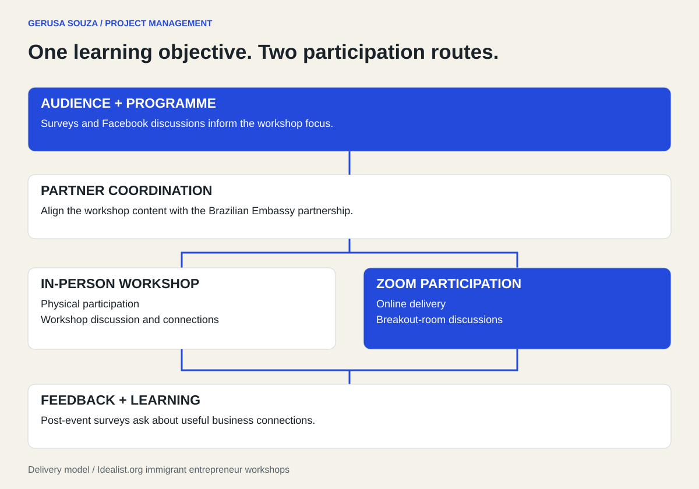
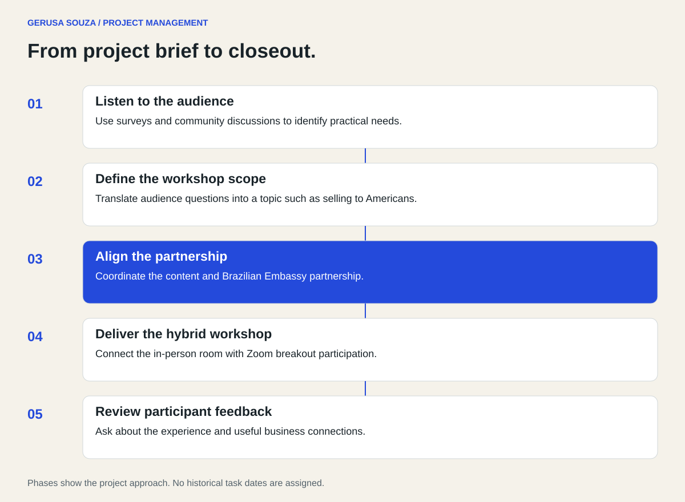
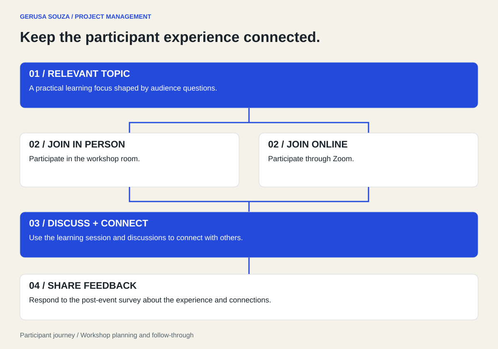

Objective
Support Latino entrepreneurs with practical learning and opportunities to connect. Events included Portuguese- and Spanish-speaking participants.
NEW YORK / Latino entrepreneurS / HYBRID WORKSHOPS
A project management case connecting audience research, the Brazilian Embassy partnership, in-person workshops, Zoom breakouts and participant feedback.
Idealist.org Workshops / Project managementSupport Latino entrepreneurs with practical learning and opportunities to connect. Events included Portuguese- and Spanish-speaking participants.
Audience research, workshop-topic development, partner coordination, hybrid delivery and participant feedback.
Translate audience needs into a useful programme for people joining in person and online.
I used surveys and Facebook community discussions to understand the questions Latino entrepreneurs were asking. Those audience signals helped shape the workshop topic, including “How to sell to Americans.”
I connected the learning need with partner coordination and a hybrid format, bringing an in-person experience together with Zoom breakout rooms.
Use audience questions to define what the session needs to address.
Coordinate the programme with the Brazilian Embassy partnership.
Use post-event surveys to ask about useful business connections.

Turn the selected learning need into a workshop focus and partner discussion.
Bring together the in-person room and online participants through Zoom breakout delivery.
Ask participants about the experience and the business connections they made.

| Interface | Project management focus |
|---|---|
| Latino entrepreneurs | Understand needs and define a practical learning topic |
| Idealist.org programme context | Connect audience, content and workshop delivery |
| Brazilian Embassy partnership | Align workshop content and partner participation |
| In-person and online participants | Connect the room and Zoom experience |
| Post-event feedback | Review participant responses and useful connections |

The work brought audience research, a practical workshop topic, partner coordination and hybrid delivery into one programme. Post-event surveys asked whether participants made useful business connections.
The project management value was the connection between audience needs, programme scope and delivery decisions.